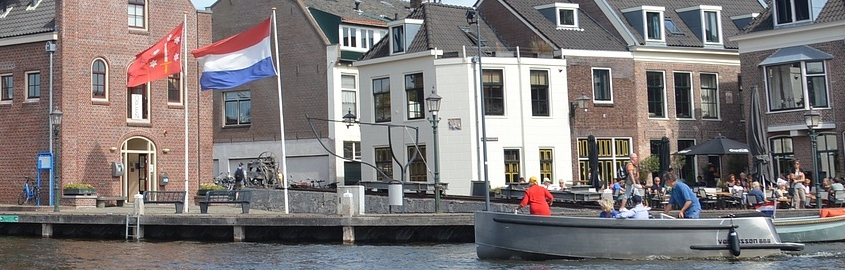
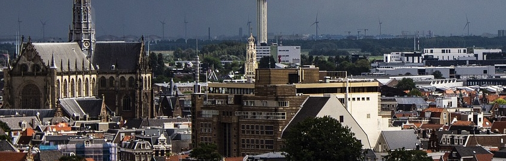

Haarlem
Haarlem is een stad die voor iedereen wel wat te bieden heeft.
In het centrum zijn veel kledingwinkels te vinden, ook van merken als Levi's , Carthart, Snipes en nog veel meer.
Natuurlijk kan je in Haarlem ook het Frans Hals museum bezoeken, dit is een kunst museum met verschillende exposities.
Op deze website kunt u een lijst met alle musea in Haarlem bekijken.
Naast het shoppen en de musea is Haarlem ook een goede plaats voor het nachtleven, je hebt hier verschillende clubs zoals : de Koning, Ruis, Murphy's en nog meer.
Ook telt Haarlem vele lekkere restaurants en gezellige cafés.

De omgeving van Taekwon (Houtstraat)
Kleine hout ligt tegen het Haarlemmerhout aan, dit is een park waar herten leven.
En er bevindt zich een klein theehuis, ook is dit een plek waar veel wordt gesport. Door groepen en mensen die voor zichzelf aan het sporten zijn.
Naast het Haarlemmerhout , hebben we ook de tempeliersstraat in de buurt, dit is de straat waarin de bussen je kunnen ophalen of afzetten
als je vanuit een andere plaats moet komen.
Ook heb je hier veel eettenten en een pool- / snookercentrum voor de liefhebber.

Taekwon sportclub
Taekwon is een vechtsport vereniging gelegen in Schalkwijk (Haarlem) en Leidsevaartweg (Heemstede).
Je kan er taekwondo leren en Brazilian Jiu Jitsu, er zijn heel de week door trainingen.
Het verschilt per leeftijd op welke dagen je training hebt.
Je kan ook jezelf verbeteren door het trainen van mudo, deze trainingen vereisen ervaring met taekwondo,
bij mudo trainingen ligt er meer focus op zelfverdediging en persoonsontwikkeling.